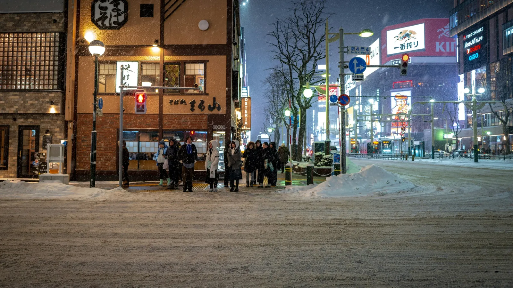

In breve
Vai a inizio febbraio se vuoi i festival: il Festival della Neve di Sapporo si tiene dal 4 all'11 febbraio 2027 e l'Otaru Snow Light Path dal 6 al 13 febbraio 2027, quindi tra il 6 e l'11 li vedi entrambi. Fai base a Sapporo, vai a Otaru per una serata, dedica una giornata lunga ai pinguini di Asahikawa e a Biei, e aggiungi il ghiaccio marino o un onsen se hai più tempo. Prenota gli hotel adesso: la settimana del festival si riempie mesi prima.
Quando andare
| Periodo | Cosa trovi |
|---|---|
| Dicembre | Prima neve vera, mercatino di Natale e luminarie a Sapporo, apre la stagione sciistica, meno folla |
| Gennaio | Il mese più freddo e nevoso: la neve migliore per sciare, paesaggi d'inverno profondo |
| Inizio febbraio | Stagione dei festival: Sapporo, Otaru e altri. Il periodo più affollato e caro |
| Fine feb – inizio marzo | Ghiaccio galleggiante nel Mare di Okhotsk, ancora pieno inverno, prezzi in calo |
Sapporo: la capitale dell'inverno
Durante il Festival della Neve il lungo Parco Odori si riempie di enormi sculture di neve (alcune grandi come palazzi), proiezioni la sera e bancarelle di cibo; a Susukino ci sono le sculture di ghiaccio e Tsudome è per le famiglie, con gli scivoli di neve. Tutte e tre le aree sono gratuite. Anche fuori dal festival Sapporo merita: la funivia del Monte Moiwa per la vista notturna, il vecchio Museo della Birra Sapporo e soprattutto il cibo — ramen al miso, soup curry e jingisukan (agnello alla griglia). Susukino, nella foto in alto, è il posto dove mangiare la sera.
Otaru: il canale a lume di candela
Piccola città portuale a circa 35–45 minuti da Sapporo in treno JR. Di giorno: il canale, i vecchi magazzini, le botteghe del vetro, il museo dei carillon e il sushi più fresco dell'isola. Durante lo Snow Light Path il canale si riempie di candele galleggianti e lanterne di neve, e la vecchia ferrovia di Temiya diventa un sentiero di luci. Arriva al tramonto, cena, passeggia e prendi un treno tardi — oppure dormi a Otaru per vederla tranquilla al mattino.
Asahikawa, Biei e Furano
Allo zoo di Asahiyama, ad Asahikawa, i pinguini reali fanno una passeggiata invernale nella neve in mezzo ai visitatori, di solito da metà dicembre a metà marzo, verso le 11:00 e anche alle 14:30 (da marzo spesso solo al mattino). Dipende dalla neve e dagli animali: lo zoo espone gli orari del giorno all'ingresso. Asahikawa è a circa 1h25 da Sapporo in espresso limitato.
Vicino, Biei diventa un paesaggio bianco e silenzioso di alberi solitari e colline; il Blue Pond e la cascata Shirahige sono illuminati in alcune sere d'inverno. Furano è un ottimo paese per sciare, con meno stranieri di Niseko. Le strade sono ghiacciate: se non hai vera esperienza di guida sulla neve, prendi un tour giornaliero da Sapporo invece di noleggiare l'auto.
Ghiaccio marino, onsen e neve fresca
- Ghiaccio galleggiante (ryūhyō): da fine gennaio a inizio marzo il ghiaccio marino dalla Siberia arriva sulla costa di Okhotsk. Le crociere rompighiaccio partono da Abashiri e Monbetsu; la penisola di Shiretoko è ancora più selvaggia. È lontano: servono almeno due giorni o un volo per Memanbetsu.
- Onsen nella neve: Noboribetsu (la Valle dell'Inferno, circa 1 ora da New Chitose) e Jozankei (un'ora da Sapporo) sono i più comodi. Un bagno all'aperto mentre nevica è l'esperienza Hokkaido.
- Neve farinosa: Niseko è famosa nel mondo e internazionale (e cara); Rusutsu, Kiroro e Furano sono più tranquille. Sapporo Teine è a 40 minuti dalla città.
Un piano di 6 giorni (inizio febbraio)
- Giorno 1: arrivo a New Chitose, treno per Sapporo, ramen e Festival della Neve di sera.
- Giorno 2: il festival di giorno (Odori, Susukino), Monte Moiwa la sera.
- Giorno 3: Otaru: canale e sushi, Snow Light Path al tramonto.
- Giorno 4: Asahikawa: pinguini, poi Biei (tour o notte ad Asahikawa).
- Giorno 5: onsen a Jozankei o Noboribetsu, oppure una giornata di sci a Teine.
- Giorno 6: shopping alla stazione di Sapporo, treno per l'aeroporto.
Abbigliamento e consigli
- Le scarpe contano più del giubbotto: stivali impermeabili con suola antiscivolo. I ramponcini da agganciare si vendono nei konbini e nelle stazioni.
- A strati: intimo termico, pile, piumino lungo, cappello, guanti. Negozi e treni sono caldissimi dentro, quindi ti toglierai strati spesso.
- La neve può cancellare treni e voli: tieni un giorno di margine prima del volo di rientro.
- Sapporo ha un grande passaggio sotterraneo tra la stazione e Susukino: usalo quando fa −10°C.
- Prenota presto gli hotel del festival: confronta gli hotel a Sapporo.
- Arrivi da Tokyo? L'aereo è molto più veloce del treno: guarda la nostra guida Tokyo in 3 giorni e aggiungi Hokkaido alla fine.
Organizza il tuo inverno in Hokkaido
Alcuni link sono affiliati: se prenoti tramite loro non paghi nulla in più e aiuti 687 a restare gratuito.
Hokkaido sotto la neve, senza giorni persi.
In 687 Japan organizzi Sapporo, Otaru e Asahikawa a tappe, con i treni, la mappa offline e il meteo. Se una bufera cancella un treno, NOW ricostruisce il resto della giornata.
Fonti
- Festival della Neve di Sapporo – sito ufficiale
- Guida turistica ufficiale di Sapporo (date eventi)
- JR Hokkaido
- Zoo di Asahiyama (ufficiale)
- Ente nazionale del turismo giapponese – Hokkaido
Verificate su questi siti ufficiali a novembre 2026. Prezzi e regole possono cambiare: controlla sempre prima di partire.